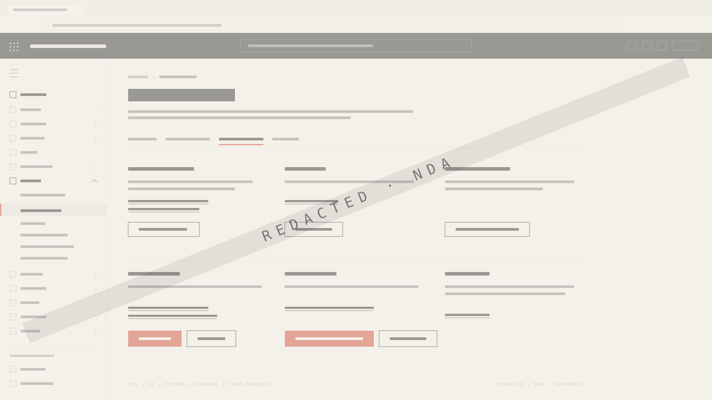
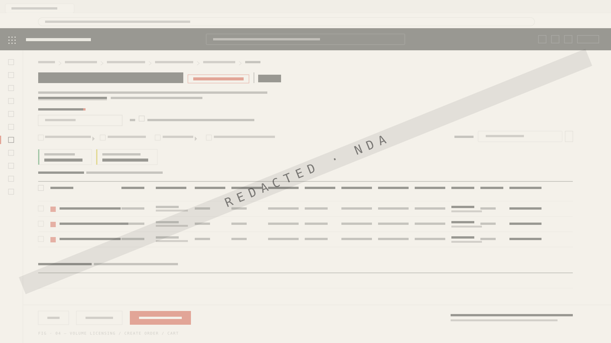

Context
Pending actions, not blanket blocks
Entry stays focused, and unresolved actions show up as relevant context.
Case 03 · Customer-facing · 2025–2026
I owned the customer-facing ordering flows that let enterprise customers order and reconcile on their own, with pricing clarity, compliance, validation, and safe recovery built in.

New, anniversary, mid-term, reservation, and reconciliation journeys each involve prior quantities, pending actions, product identifiers, pricing, compliance, and their own correctness conditions. Manual processing would never scale, but real self-service couldn't hide the safeguards.
I brought ordering expertise into Phase 1 requirements and owned end-to-end entry, order intent, pending actions, product grids, filters, identifiers, quantities, validation, and guidance, in partnership with product, engineering, and research.
Design reviews showed the need for a simple purchase-or-reservation entry, contextual pending actions, clear compliance logic, meaningful identifiers, familiar filters, and understandable reconciliation quantities. Later UAT surfaced broader reservation, future-billing, and save-as-draft needs.
Related research with three enterprise customer organizations pointed the same way: prefill with editability, guidance, concise notifications, clear roles, collaboration, and control.
Self-service means confidence, control, validation, collaboration, and recovery, with support available where it matters.
Entry stays focused, and unresolved actions show up as relevant context.
Reusing adjacent product behavior lowers relearning and inconsistency.
Reconciliation guidance sits beside the decision it affects.
Backend precision is not enough when the identifier is a poor recognition cue.
Compliance and complexity risk outweighed near-term value in one phase.
Separate UX gaps from data, policy, and engineering causes so each gets the right owner.

Three August 2025 actions assigned to me, simplifying pending actions, aligning filters, and clarifying quantity messaging, were completed.
UAT surfaced 35 experience gaps. I took on UX classification, design updates, stakeholder walkthroughs, and the closure drive, while data, policy, and engineering owners took the causes that were theirs.
A controlled pilot with 15 enrollments across three regions and staggered onboarding, aimed at a 13% lower cost per direct enrollment.
Completion, time, abandonment, errors, support contacts, reconciliation success, defects, and confidence, segmented by order type.